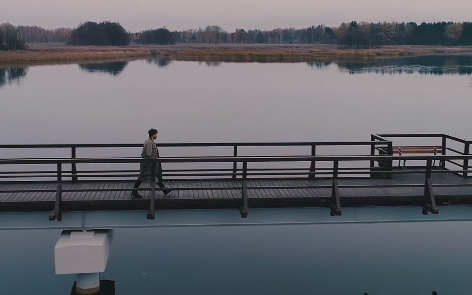

Songs name: "Vasara"
Album: Vasara
Release date: 2019

Songs name: "All My Love"
Album: All My Love
Release date: 2017
These concerts are worth mentioning (so are their gigs with LANA DEL REY, HURTS, NICOLAS JAAR, RHYE, SOHN, WE HAVE BAND and GUSGUS, for example) because they are a reminder of how wide and far-reaching GOLDEN PARAZYTH'S appeal can be. It's truly extraordinary – electronic pop delivered with the intensity that is typical of rock’n’roll and sound elements that clearly show alternative rock influences, drawing crowds of hipsters, old ravers and indie kids. See them on a good night and you'll be talking about the experience for months to come. Emerging practically out of nowhere in 2005, a year later GOLDEN PARAZYTH released his debut album APARTAMENT OF STEEL (2006) which is now considered a cult classic. Underground scenesters hailed it as the best electronic album of the decade – an invitation to play a warm up gig for British legends UNDERWORLD surprised no one. GIEDRIUS ŠIRKA (to his mother) started building his reputation in 2006. Killing the dancefloor with laptop beats one minute, performing on an acoustic guitar the other, sweating and laughing like a crazy scientist who just found out things in his chemical laboratory went seriously wrong, he provokes enthusiasm which we usually see at gigs by visiting foreign A-list stars. Special themed parties, growing fanbase and unconventional songwriting didn't go unnoticed and soon he (GP) was taking calls from major Lithuanian labels. Sophomore album ALL THE TRUTH ABOUT BLUE MONKEYS (2009), which it's somewhat more accessible sounds that range from gentle indie to party anthems, increased the artist's radio exposure, pleased hip crowds and brought new listeners to table. It all started as lead singer GP’s solo project, but nowadays he is joined by his partner in crime AURIMAS VILKIŠIUS (KETA). You can see them doing push ups before the gigs – no wonder, as these men do look possessed on stage and their energetic live performances with wild passion have to be seen to be believed. With their third album LONG WAY HOME (2012) and the second EP 98 WINDOWS (2013), GOLDEN PARAZYTH has rapidly become one of the most exciting names in electronic music over the past years. Their l One of these, 98 WINDOWS, includes DOWNTOWN GAME – a collaboration with JAZZYVILE, another “electronica meets whatever you throw at it” act worth investigating. A beautiful mid-tempo track, perfect for those late nights are lazy Sunday afternoons – and a proof that GOLDEN PARAZYTH have a soft side too. 2013 brought the band more memorable moments than you can shake a stick at – like playing a solo gig for thousands of happy revellers at the Cathedral Square of Vilnius – the very heart of Lithuanian's capital that every local artist dreams to perform, being selected to perform a sold out arena show alongside LANA DEL REY, or putting on a wild and sweaty performance at EUROPAVOX FESTIVAL in France. “They're really onto something” - that was how Adam Anderson (a half of the well known British duo HURTS) described GOLDEN PARAZYTH after witnessing the band's performance. The story goes that in 2013 both HURTS and Baltics music experts voted these Lithuanians the most worthy to warm up for the British stars during their November trek of Estonia, Latvia and Lithuania. No wonder – various incarnations of GOLDEN PARAZYTH have been around from 2005, wathing the fan base grow steadily, and constantly evolving into a musical proposition, which is now atrractive both to highbrow electronica specialists and drunken rock festival goers. With falsetto vocals and clapping beats, IN THE NIGHT is just one of many interesting tunes that GOLDEN PARAZYTH have to offfer – a version of this tune, by the way, got a remix treatment from German electronic music maestro TIMO MASS. 2014 saw a symbolic end of a chapter – the band toured across Lithuania with a “best of” setlist and released a mammoth two and a half hour, 32 tracks long compilation of their work LOOKING BACKWARD, MOVING FORWARD. Having con-quered almost every live venue and festival in Lithuania, GOLDEN PARAZYTH caught the attention of foreign bookers – they have succesfully performed across the Baltics, touring clubs and festivals in France, England, Germany, Ireland, Luxembourg as well as countries of their region – Poland, Estonia, Latvia. Killing the dance floor with synthetic beats, looped guitar samples and uplifting vocals, GP and Keta are now on the watch list of quite a few festivals in the region, although they have difficulties describing their own sound.
Text: Ramūnas Zilnys
|  |
Songs name: "Vasara" Album: Vasara Release date: 2019 |
|
|
Songs name: "All My Love" Album: All My Love Release date: 2017 |